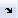
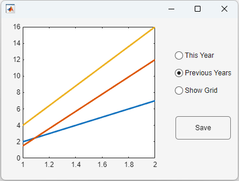
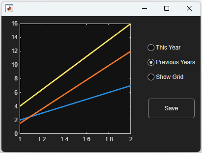
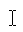
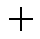
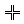
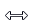
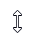

Figure
Figure window
Description
A figure is a container for graphics or apps. Use
the Figure object to modify the appearance and behavior of a figure after you
create it.
Creation
There are several ways to create a Figure object:
The way you create a figure affects the default property values of the
Figure object. For more information, see Differences Between Figures Created Using figure and uifigure.
Properties
Window Appearance
Background color, specified as an RGB triplet, a hexadecimal color code, or one of the color options listed in the table.
For a custom color, specify an RGB triplet or a hexadecimal color code.
An RGB triplet is a three-element row vector whose elements specify the intensities of the red, green, and blue components of the color. The intensities must be in the range
[0,1], for example,[0.4 0.6 0.7].A hexadecimal color code is a string scalar or character vector that starts with a hash symbol (
#) followed by three or six hexadecimal digits, which can range from0toF. The values are not case sensitive. Therefore, the color codes"#FF8800","#ff8800","#F80", and"#f80"are equivalent.
Alternatively, you can specify some common colors by name. This table lists the named color options, the equivalent RGB triplets, and the hexadecimal color codes.
| Color Name | Short Name | RGB Triplet | Hexadecimal Color Code | Appearance |
|---|---|---|---|---|
"red" | "r" | [1 0 0] | "#FF0000" |
|
"green" | "g" | [0 1 0] | "#00FF00" |
|
"blue" | "b" | [0 0 1] | "#0000FF" |
|
"cyan"
| "c" | [0 1 1] | "#00FFFF" |
|
"magenta" | "m" | [1 0 1] | "#FF00FF" |
|
"yellow" | "y" | [1 1 0] | "#FFFF00" |
|
"black" | "k" | [0 0 0] | "#000000" |
|
"white" | "w" | [1 1 1] | "#FFFFFF" |
|
"none" | Not applicable | Not applicable | Not applicable | No color |
This table lists the default color palettes for plots in the light and dark themes.
| Palette | Palette Colors |
|---|---|
Before R2025a: Most plots use these colors by default. |
|
|
|
You can get the RGB triplets and hexadecimal color codes for these palettes using the orderedcolors and rgb2hex functions. For example, get the RGB triplets for the "gem" palette and convert them to hexadecimal color codes.
RGB = orderedcolors("gem");
H = rgb2hex(RGB);Before R2023b: Get the RGB triplets using RGB =
get(groot,"FactoryAxesColorOrder").
Before R2024a: Get the hexadecimal color codes using H =
compose("#%02X%02X%02X",round(RGB*255)).
Window state, specified as one of these values:
'normal'— The window displays in a normal state.'minimized'— The window is collapsed, but you can still execute commands to get or set its properties, to add children, or to create plots in the window.'maximized'— The window fills the screen. The minimize, restore, and close buttons provided by the operating system appear in the corner of the window. If the window has menus in the normal state, they are present in this state.'fullscreen'— The window fills the screen. However, the minimize, restore, and close buttons provided by the operating system are hidden. If the window has menus in the normal state, they are present in this state.
Setting this property on a docked figure undocks the figure and sets the
WindowState property to 'normal'.
Clicking the minimize, maximize, or restore button provided by the operating
system sets the WindowState property accordingly. Pressing
Ctrl+F11 (Windows® and Linux®) or Ctrl+Command+F (macOS) toggles the 'fullscreen' state.
Setting the WindowState property in MATLAB
Online™ is not supported.
Figure menu bar display, specified as 'none' or
'figure'. The MenuBar property enables you
to display or hide the default menus at the top of a figure window. Specify
'figure' to display the menu bar. Specify
'none' to hide it.
For figures created using the figure function, setting the
MenuBar property to 'figure' undocks the
figure and removes the toolstrip from the window.
This property affects only default menus, and does not affect menus created using
the uimenu function.
Menu bars do not appear in figures whose WindowStyle property is set to
'modal'. If a figure containing menu children is changed to
'modal', the menu children still exist in the Children property of the
figure. However, the menus do not display while WindowStyle is
set to 'modal'.
Figure toolbar display, specified as one of these values:
'none'— Toolbar does not display.'figure'— Toolbar displays.'auto'— Uses the same value as theMenuBarproperty.
For figures created using the figure function, setting the
ToolBar property to 'figure' undocks the
figure and removes the toolstrip from the window.
Toolbars do not appear in figures whose WindowStyle property
is set to 'modal'. If a figure containing a toolbar is changed to
'modal', the toolbar children still exist in the
Children property of the figure. However, the toolbar does not
display while WindowStyle is set to
'modal'.
Interactive figure docking, specified as 'on' or
'off', or as numeric or logical 1
(true) or 0 (false). A
value of 'on' is equivalent to true, and
'off' is equivalent to false. Thus, you can
use the value of this property as a logical value. The value is stored as an on/off
logical value of type matlab.lang.OnOffSwitchState.
This list describes the behavior of each of the values.
'on'— MATLAB enables the figure dock button  in the Figures toolstrip or menu bar, if the figure has one. Clicking the button docks the figure in the MATLAB desktop.'off'— MATLAB disables figure dock button. You cannot set theDockControlsproperty to'off'if theWindowStyleis set to'docked'.
Since R2025a
Graphics theme, specified as "light",
"dark", or a GraphicsTheme object, and stored as
a GraphicsTheme object.
| Light Theme Appearance | Dark Theme Appearance |
|---|---|

|

|
As an alternative to setting the Theme property, you can call
the theme
function.
To determine whether the current theme is a light or dark theme, query the
Theme property to get the GraphicsTheme
object. Then query the BaseColorStyle property of the
GraphicsTheme object. This second query returns a value of
'light' or 'dark'.
f = figure; gtobject = f.Theme; figtheme = gtobject.BaseColorStyle
Since R2025a
Graphics theme selection, specified as one of these values:
"auto"— Use the figure theme specified in the MATLAB Settings window. By default, the figure theme is set toMATLAB Desktop, which sets the theme of all figures to match the theme of the MATLAB desktop."manual"— Use the theme specified in theThemeproperty and do not change it even if the MATLAB desktop theme changes.
The ThemeMode property automatically changes to
"manual" when you set the theme explicitly (for example, by
setting the Theme property or calling the theme
function).
Position and Size
Location and size of figure, excluding borders, figure tools and title bar,
specified as a four-element vector of the form [left bottom width
height]. All measurements are in units specified by the
Units property.
This property value is identical to the Position property
value.
Location and size of figure, including borders, figure tools, and title bar,
specified as a four-element vector of the form [left bottom width
height].
This table describes each element in the vector.
| Element | Description |
|---|---|
left | Distance from the left edge of the primary display to the outer left edge of the figure window. This value can be negative on systems that have more than one monitor. If the figure is docked, then this value is relative to its container. |
bottom | Distance from the bottom edge of the primary display to the outer bottom edge of the figure window. This value can be negative on systems that have more than one monitor. If the figure is docked, then this value is relative to its container. |
width | Distance between the right and left outer edges of the window. |
height | Distance between the top and bottom outer edges of the window. |
All measurements are in units specified by the
Units property.
For figures that are docked into a figure container, setting the
OuterPosition property undocks the figure and sets the
WindowStyle property to 'normal'.
Note
The Windows operating system enforces a minimum window width and a maximum window size. If you specify a figure size outside of those limits, the displayed figure conforms to the limits instead of the size you specified.
Resizable figure, specified as 'on' or
'off', or as numeric or logical 1
(true) or 0 (false). A
value of 'on' is equivalent to true, and
'off' is equivalent to false. Thus, you can
use the value of this property as a logical value. The value is stored as an on/off
logical value of type matlab.lang.OnOffSwitchState.
When this property is set to 'on', the figure is resizable.
Otherwise, it is not resizable.
For figures that are docked into a figure container, setting the
Resize property undocks the figure and sets the
WindowStyle property to 'normal'.
Automatically resize children, specified as 'on' or
'off', or as numeric or logical 1
(true) or 0 (false). A
value of 'on' is equivalent to true, and
'off' is equivalent to false. Thus, you can
use the value of this property as a logical value. The value is stored as an on/off
logical value of type matlab.lang.OnOffSwitchState.
'on'— Child components automatically resize when the container resizes. This value is the default for figures created using theuifigurefunction.'off'— Child components do not resize. This value is the default for figures created using thefigurefunction.
The AutoResizeChildren property affects direct
children of the container, not children inside nested containers.
Some child components do not resize automatically when
AutoResizeChildren is 'on'. For example,
labels, buttons, and containers that contain only non-resizing components do not
resize.
To customize the resize behavior, either add a grid layout manager to the
container, or set the AutoResizeChildren property to
'off' and create a SizeChangedFcn callback
for the container. For more information, see Manage Resizable Apps in App Designer.
To disable resizing of an app, set the Resize property of the
figure to 'off'.
It is recommended to specify AutoResizeChildren as
'on' only in apps that are laid out using pixel units. Enabling
automatic resizing in apps that are laid out using non-pixel units might cause
unexpected behavior.
Plotting
Color map for axes content of a figure, specified as an
m-by-3 array of RGB (red, green, blue)
triplets that define m individual colors.
Example: figure('Colormap',[1 0 1; 0 0 1; 1 1 0]) sets the color
map to three colors: magenta, blue, and yellow.
MATLAB accesses these colors by their row number.
Color maps affect the rendering of objects created with the surface, image, and patch functions, but generally do not affect other graphics
objects.
When you set the Colormap property of the figure, then axes
and charts in the figure use the same colormap.
Transparency map for axes content, specified as an array of finite alpha values
that progress linearly from 0 to 1. The size of
the array can be m-by-1 or 1-by-m. MATLAB accesses alpha values by their index in the array. Alphamaps can be any
length.
Alphamaps affect the rendering of objects created with the surface, image, and patch functions, but do not affect other graphics objects.
When you set the Alphamap property of the figure, then axes
and charts in the figure use the same alpha map.
Directive on how to add next plot, specified as 'add',
'new', 'replace', or
'replacechildren'.
This property has an effect only if the figure can become the current figure (that
is, if the HandleVisibility property of the figure is
"on").
This table describes the effect of each value.
| Property Value | Effect |
|---|---|
'new' | Creates a new figure and uses it as the current figure. |
'add' | Adds new graphics objects without clearing or resetting the current figure. |
'replacechildren' | Removes all axes objects that are not hidden before adding new objects. Does not reset figure properties. Equivalent to using
the |
'replace' | Removes all axes objects and resets figure properties to their defaults before adding new graphics objects. Equivalent to using
the |
Consider using the newplot function to handle the
NextPlot property. For more information, see the axes NextPlot property and
Prepare Figures and Axes for Graphs.
Printing and Exporting
Figure size and location on page when printing or saving, specified as a
four-element vector of the form [left bottom width height].
leftandbottomvalues — Control the distance from the lower left corner of the page to the lower left corner of the figure. These values are ignored when saving a figure to a nonpage format, such as a PNG or EPS format.widthandheightvalues — Control the figure size. If the width and height values are too large, then the figure might not reach the specified size. If the figure does not reach the specific size, then any UI components on the figure, such as a UI control or a UI table, might not save or print as expected.
The PaperUnits property
determines the units of measurement of the PaperPosition values.
Consider setting the PaperUnits property to
'normalized'. This setting enables MATLAB to automatically size the figure to occupy the same relative amount of
the printed page, regardless of the page size.
Example: figure('PaperPosition',[.25 .25 8 6]) set the figure’s
size and location for printing to [.25 .25 8 6].
Directive to use displayed figure size when printing or saving, specified as
either 'auto' or 'manual'.
'auto'— Printed or saved figure size matches the displayed figure size. Thewidthandheightvalues of thePaperPositionproperty equal the figure size on the display. Theleftandbottomvalues center the figure. If the figure size changes on the display, thePaperPositionproperty automatically updates to the appropriate size and location values.'manual'— Printed or saved figure size might not match the displayed figure size. Use this option if you want to print or save the figure using a size that differs from the display, or if you do not want the figure centered on the printed or saved page. Set thePaperPositionproperty to the desired size and location. If the figure size changes on the display, thePaperPositionproperty does not automatically update.
To generate output that has the same size and resolution (DPI) as the displayed
figure, set the PaperPositionMode property of the figure to
'auto' and save the figure using print with the -r0 option. The -r0
option ensures that the output resolution is the same as the display resolution. If
the resolutions are different, then the generated output size matches the displayed
figure size in measured units (inches, centimeters, points), but not in pixels. For
example, if the display resolution is 100 DPI, then a 4-by-5 inch figure is 400-by-500
pixels. If the output resolution is 200 DPI, then the printed or saved figure is the
same size in inches, but 800-by-1000 pixels.
Custom page size when printing the figure or saving it to a paged format (PDF and
PostScript® formats), specified as a two-element vector of the form [width
height]. In the United States, the default value is [8.5
11]. In Europe and Asia, the default value is [21
29.7].
Note
If you are saving the figure to a file, the PaperSize
property only affects PDF and PostScript file formats. Other file formats ignore this property. Use the
PaperPosition property to control the size of the saved
figure.
The PaperUnits property
determines the units of measurement for the PaperSize property. You
cannot set the PaperSize property if the
PaperUnits property is set to 'normalized'.
Attempting to do so results in an error.
Specifying the PaperSize property sets the
PaperType property to the corresponding type, if one exists, or
to 'custom' otherwise.
Units used for PaperSize and PaperPosition,
specified as one of these values:
'inches'— Value in inches. This is the default when the locale is the United States.'normalized'— Normalized units. The lower left corner of the page maps to(0,0)and the upper right corner maps to(1,1).'centimeters'— Value in centimeters. This is the default when the locale is Europe or Asia.'points'— Value in points. One point equals 1/72 of an inch.
Note
If you change the value of the PaperUnits property, it is
good practice to return the property to its original value after completing your
computation so as not to affect other functions that assume the
PaperUnits property has not changed.
Orientation of page when printing figure or saving it to a paged format (PDF and PostScript formats), specified as one of these values:
'portrait'— Orient the longest page dimension vertically.'landscape'— Orient the longest page dimension horizontally.
See the orient function for more
information.
Note
When using File > Save As,
only PDF and full-page PS formats use the PaperOrientation
property. Other formats ignore these values.
Standard page sizes when printing the figure or saving it to a paged format (PDF
and PostScript formats), specified as one of the values in this table. Specifying the
PaperType property sets the PaperSize property
to the corresponding page size.
Value | Page Size (Width x Height) |
|---|---|
| 8.5-by-11 in (default in US) |
| 8.5-by-14 in |
| 11-by-17 in |
| 84.1-by-118.9 cm |
| 59.4-by-84.1 cm |
| 42-by-59.4 cm |
| 29.7-by-42 cm |
| 21-by-29.7 cm (default in Europe and Asia) |
| 14.8-by-21 cm |
| 102.9-by-145.6 cm |
| 72.8-by-102.8 cm |
| 51.4-by-72.8 cm |
| 36.4-by-51.4 cm |
| 25.7-by-36.4 cm |
| 18.2-by-25.7 cm |
| 9-by-12 in |
| 12-by-18 in |
| 18-by-24 in |
| 24-by-36 in |
| 36-by-48 in |
| 8.5-by-11 in |
| 11-by-17 in |
| 17-by-22 in |
| 22-by-34 in |
| 34-by-43 in |
'<custom>' | Custom page size. Specifying a non-standard page size using the
|
Mouse Pointer
Pointer symbol, specified as one of the values in the following table or as 'custom'. The appearance of the symbol is operating-system dependent.
Value | Resulting Symbol (System Dependent) |
|---|---|
|
|
|
 |
|
 |
|
|
|
|
|
|
|
|
|
 |
|
|
|
 |
|
 |
|
|
Custom Pointer Symbol
To create a custom pointer symbol, programmatically set the Pointer property to 'custom' and use the PointerShapeCData property to define the symbol. See the PointerShapeCData property for more information.
Limitations
Pointer symbols specified by the Pointer property do not
display over HTML UI components created with the uihtml
function.
Custom pointer symbol, specified as a 16-by-16 matrix (for a 16-by-16 pixel pointer), or as a
32-by-32 matrix (for a 32-by-32 pixel pointer). The figure uses this pointer
symbol when you set the Pointer property to
'custom'.
Each element in the matrix defines the brightness level for 1 pixel in the pointer, where the element can have one of these values:
1— Black pixel.2— White pixel.NaN— Transparent pixel, such that underlying screen shows through.
Element (1,1) of the matrix corresponds to
the pixel in the upper left corner in the pointer.
Active pixel of the pointer, specified as a two-element vector. The vector contains the row and column indices of a particular element in the PointerShapeCData matrix that corresponds to the desired active pixel. The default value of [1 1] corresponds to the pixel in the upper left corner of the pointer.
If you specify a value outside the range of the PointerShapeCData matrix, then the pointer uses the default active pixel of [1 1] instead.
This property applies only when the Pointer property is set to 'custom'.
Interactivity
State of visibility, specified as 'on' or 'off',
or as numeric or logical 1 (true) or
0 (false). A value of 'on'
is equivalent to true, and 'off' is equivalent to
false. Thus, you can use the value of this property as a logical
value. The value is stored as an on/off logical value of type matlab.lang.OnOffSwitchState.
'on'— Display the object.'off'— Hide the object without deleting it. You still can access the properties of an invisible UI component.
To make your app start faster, set the Visible property to
'off' for all components that do not need to appear at
startup.
Changing the size of an invisible container triggers the
SizeChangedFcn callback when it becomes visible.
Changing the Visible property of a container does
not change the values of the Visible
properties of child components. This is true even though hiding the container causes the
child components to be hidden.
Target axes in the current figure, specified as a Axes, UIAxes, or PolarAxes object, or a graphics object such as a HeatmapChart.
In all figures for which axes children exist, there is always a current axes. The
current axes does not have to be the topmost axes, and setting an axes to be the
current axes does not restack it above all other axes. If a figure contains no axes,
the get(gcf,'CurrentAxes') command returns an empty array.
Query the CurrentAxes property to get the current axes object
without forcing the creation of an axes if one does not exist.
Current object, returned as a child object of the figure. MATLAB sets the CurrentObject property to the last object
clicked in the figure. This object is the front-most object in the view.
The HitTest property of the child object controls whether
that object can become the CurrentObject.
Clicking an object whose HandleVisibility property is
'off' sets the CurrentObject property to an
empty GraphicsPlaceholder array. To avoid returning the
empty array when users click a hidden object, set HitTest
property of the hidden object to 'off'.
Use the gco command as an alternative for
getting the value of this property.
Current point, returned as a two-element vector. The vector contains the
(x, y) coordinates of the mouse pointer,
measured from the lower-left corner of the figure. The values are in units specified
by the Units property. If the figure is scrollable, the
coordinates are measured from the lower-left corner of the scrollable area. The
scrollable area is the area that is bounded by the limits of the scroll bars.
The coordinates update when you do any of the following:
Press the mouse button within the figure.
Release the mouse button after pressing it within the figure.
Press the mouse button within the figure, and then release it outside the figure.
Rotate the scroll wheel within the figure.
Move the mouse within the figure (without pressing any buttons), as long as the
WindowButtonMotionFcnproperty is not empty.
If the figure has a callback that responds to mouse interactions, and you trigger that callback faster than the system can execute the code, the coordinates might not reflect the actual location of the pointer. Instead, they are the location when the callback began execution.
If you use the CurrentPoint property to plot points, the
coordinate values might contain rounding error.
Current character, returned as the character of the last key pressed. This property updates when the figure has focus while the user presses a key.
Mouse selection type, returned as 'normal',
'extend', 'alt', or 'open'.
This property provides information about the last mouse button press that occurred in
the figure.
This table lists the possible SelectionType values and the
user actions that produce those values.
Value | Corresponding Action |
|---|---|
| Click the left mouse button. |
| Any of the following:
|
| Either of the following:
|
| Double-click any mouse button. |
Context menu, specified as a ContextMenu object created with
the uicontextmenu function. Use this
property to display a context menu when you right-click on a figure.
Common Callbacks
Since R2025a
Theme changed callback, specified as one of these values:
A function handle.
A cell array in which the first element is a function handle. Subsequent elements in the cell array are the arguments to pass to the callback function.
A character vector containing a valid MATLAB expression (not recommended). MATLAB evaluates this expression in the base workspace.
This callback executes when the theme of the figure changes. For example, this callback executes in all of these situations:
When you programmatically change the theme by calling the
themefunction or setting theThemeproperty of theFigureobjectWhen you change the figure theme using the Figure toolstrip
When you apply a different theme in the MATLAB settings that changes the figure theme
This callback function can access specific information about the figure theme
change. MATLAB passes this information in a ThemeChangedData object as the second argument to your callback function,
often specified as event. You can query the object’s properties
using dot notation. For example, event.Theme returns the new figure
theme as a GraphicsTheme object. The ThemeChangedData object is not available to callback functions specified
as character vectors.
This table lists the properties of the ThemeChangedData object.
| Property | Value |
|---|---|
Theme | New figure theme, returned as a Query the themeobj = event.Theme; themeval = themeobj.BaseColorStyle; |
PreviousTheme | Previous figure theme, returned as a
Query the
themeobj = event.PreviousTheme; themeval = themeobj.BaseColorStyle; |
Source | Figure object that executes the callback |
EventName | 'ThemeChanged' |
For more information about specifying a callback property value as a function handle, cell array, or character vector, see Specify a Callback Function.
Button down callback, specified as one of these values:
A function handle.
A cell array in which the first element is a function handle. Subsequent elements in the cell array are the arguments to pass to the callback function.
A character vector containing a valid MATLAB expression (not recommended). MATLAB evaluates this expression in the base workspace.
This callback executes when the user clicks a blank area of the figure.
For more information about specifying a callback property value as a function handle, cell array, or character vector, see Specify a Callback Function.
Use the SelectionType property to determine whether the user
pressed modifier keys.
Keyboard Callbacks
Key-press callback, specified as one of these values:
A function handle.
A cell array in which the first element is a function handle. Subsequent elements in the cell array are the arguments to pass to the callback function.
A character vector containing a valid MATLAB expression (not recommended). MATLAB evaluates this expression in the base workspace.
This callback function executes when the user presses a key while the figure has
focus. Pressing a key on a UI component that accepts keyboard focus (such as an edit
field) does not execute the callback unless the component is disabled. You can disable
a component by setting the Enable or
Editable property to 'off'. In addition, you
can disable a Table or UIControl component
without graying it out by setting the Enable property to
'inactive'.
If the user presses multiple keys at approximately the same time, MATLAB detects all the keys.
The KeyPressFcn callback can access specific information
about the user’s interaction with the keyboard. MATLAB passes this information in a KeyData object as the
second argument to your callback function. This table lists the properties of the
KeyData object.
| Property | Description | Examples: | |||
|---|---|---|---|---|---|
a | = | Shift | Shift-a | ||
Character | The character that appears as a result of pressing the key or keys. Pressing certain keys alone (such as
Ctrl, Alt, Shift)
does not generate | 'a' | '=' | '' | 'A' |
Modifier | A cell array containing the names of the modifier keys pressed,
such as | {1x0 cell} | {1x0 cell} | {'shift'} | {'shift'} |
Key | The key pressed, identified by the lowercase label on the key
(such as | 'a' | 'equal' | 'shift' | 'a' |
Source | The object that has focus when the key is pressed. | Figure object | Figure object | Figure object | Figure object |
EventName | The action that caused the callback function to execute. | 'KeyPress' | 'KeyPress' | 'KeyPress' | 'KeyPress' |
For more information about specifying callback property values and using callback arguments, see Specify a Callback Function.
The CurrentCharacter property also returns character
information.
Key-release callback, specified as one of these values
A function handle.
A cell array in which the first element is a function handle. Subsequent elements in the cell array are the arguments to pass to the callback function.
A character vector containing a valid MATLAB expression (not recommended). MATLAB evaluates this expression in the base workspace.
This callback function executes when the user releases a key while the figure has
focus. Releasing a key on a component that accepts keyboard focus (such as an edit
field) does not execute the callback unless the component is disabled. You can disable
a component by setting the Enable or
Editable property to 'off'. In addition, you
can disable a Table or UIControl component
without graying it out by setting the Enable property to
'inactive'.
This callback function can access specific information about the user’s
interaction with the keyboard. MATLAB passes this information in a KeyData object as the
second argument to your callback function. This table lists the properties of the
KeyData object.
| Property | Description | Examples: | |||
|---|---|---|---|---|---|
a | = | Shift | Shift-a | ||
Character | The character that corresponds to the key or keys that are released. Pressing and releasing certain keys alone (such as
Ctrl, Alt, Shift)
does not generate | 'a' | '=' | '' | 'A' |
Modifier | A cell array containing the names of the modifier keys pressed,
such as | {1x0 cell} | {1x0 cell} | {'shift'} | {'shift'} |
Key | The key released, identified by the lowercase label on the key
(such as | 'a' | 'equal' | 'shift' | 'a' |
Source | The object that has focus when the key is released. | Figure object | Figure object | Figure object | Figure object |
EventName | The action that caused the callback function to execute. | 'KeyRelease' | 'KeyRelease' | 'KeyRelease' | 'KeyRelease' |
For more information about specifying callback property values and using callback arguments, see Specify a Callback Function.
Window Callbacks
Close request callback, specified as one of these values:
A function handle.
A cell array in which the first element is a function handle. Subsequent elements in the cell array are the arguments to pass to the callback function.
A character vector containing a valid MATLAB expression (not recommended). MATLAB evaluates this expression in the base workspace.
For more information about specifying a callback property value as a function handle, cell array, or character vector, see Specify a Callback Function.
MATLAB executes this callback when the app user attempts to close the app. For example, you can code the callback to display a dialog box that asks the app user to confirm or cancel the close operation.
The default value of the CloseRequestFcn callback,
'closereq', unconditionally deletes the figure, destroying the
window.
Consider calling the delete function to close the Figure in the CloseRequestFcn callback:
In App Designer, call
delete(app).For other figures, call
delete(f), wherefis theFigureobject.
If the CloseRequestFcn callback does not contain a
delete command, MATLAB never closes the window. You can always call the
delete function to force the window to close.
Example: Code CloseRequestFcn to Display Dialog Box
This example shows how to code the close request function to display a confirmation dialog box asking the user to confirm the close operation. Save the code to a writable folder on your system.
function myCloseReq(src,event) selection = uiconfirm(src,'Close this figure?',... 'Confirm Close'); switch selection case 'OK' delete(src) case 'Cancel' return end end
Now, create a figure and specify myCloseReq for the
CloseRequestFcn. Notice that the function handle does not
explicitly refer to any input arguments, but the function declaration includes two
input arguments. MATLAB passes these arguments automatically when the callback executes. The
first argument is the UI component that triggered the callback, and the second
argument provides event data to the callback function.
uifigure('CloseRequestFcn',@myCloseReq);Close the figure window and the confirmation dialog box appears.
Size changed callback, specified as one of these values:
A function handle.
A cell array in which the first element is a function handle. Subsequent elements in the cell array are the arguments to pass to the callback function.
A character vector containing a valid MATLAB expression (not recommended). MATLAB evaluates this expression in the base workspace.
Define this callback to customize the layout of the figure contents when the size
of the figure changes (for example, when you resize the window). In the callback,
write code to adjust the Position property of the child
components.
Note
The SizeChangedFcn callback will not execute unless the
AutoResizeChildren property of the figure is set to
'off'. In App Designer, you can make the
SizeChangedFcn executable by selecting the container and
clearing the AutoResizeChildren check box in the component tab
of the Component Browser.
The SizeChangedFcn callback executes when:
The figure becomes visible for the first time.
The figure is visible while its size changes.
The figure becomes visible for the first time after its size changes. This situation occurs when the size changes while the figure is invisible, and then it becomes visible later.
Other important points to consider when defining a
SizeChangedFcn callback:
Consider delaying the display of the figure until after all the variables that the
SizeChangedFcnuses are defined. This practice can prevent theSizeChangedFcncallback from returning an error. To delay the display of the figure, set itsVisibleproperty to'off'. Then, set theVisibleproperty to'on'after you define the variables that yourSizeChangedFcncallback uses.If your figure contains nested containers, they resize from the inside out.
To access the figure that is resizing from within the
SizeChangedFcn, refer to the source object (the first input argument in the callback).
Alternate ways to specify resize behavior are to create a
GridLayout object or use the auto-reflow options in App Designer.
These options can be easier to use than SizeChangedFcn callbacks.
However, there are some advantages that SizeChangedFcn callbacks
have over these options. For example, you can use a
SizeChangedFcn callback to:
Resize a component up to a minimum or maximum size that you define.
Implement non-linear resize behavior.
Window button down callback, specified as one of these values:
A function handle.
A cell array in which the first element is a function handle. Subsequent elements in the cell array are the arguments to pass to the callback function.
A character vector containing a valid MATLAB expression (not recommended). MATLAB evaluates this expression in the base workspace.
This callback executes when the user clicks any of these locations:
A blank area of the figure
A UI component within the figure
A graphics object within the figure that supports the
ButtonDownFcnpropertyA
UIAxesobject
For example, clicking an Axes object triggers the
WindowButtonDownFcn callback.
If the user clicks a Table component, the callback does not
execute unless the Enable property of the table is set to
'off' or 'inactive'.
See the list of properties for a specific graphics object to determine if it
supports the ButtonDownFcn property. See Graphics Object Properties for the
properties of graphics objects.
For more information about specifying a callback property value as a function handle, cell array, or character vector, see Callbacks in App Designer or Create Callbacks for Apps Created Programmatically.
Window button motion callback, specified as one of these values:
A function handle.
A cell array in which the first element is a function handle. Subsequent elements in the cell array are the arguments to pass to the callback function.
A character vector containing a valid MATLAB expression (not recommended). MATLAB evaluates this expression in the base workspace.
Typically, this callback function executes whenever the user moves the pointer
within the figure. However, if the user clicks and holds the mouse button and moves
the pointer outside the figure, the WindowButtonMotionFcn
callback executes while the pointer is outside the figure.
For more information about specifying a callback property value as a function handle, cell array, or character vector, see Callbacks in App Designer or Create Callbacks for Apps Created Programmatically.
Window button up callback, specified as one of these values:
A function handle.
A cell array in which the first element is a function handle. Subsequent elements in the cell array are the arguments to pass to the callback function.
A character vector containing a valid MATLAB expression (not recommended). MATLAB evaluates this expression in the base workspace.
This callback executes when the user releases the mouse button on any of these locations:
A blank area of the figure
A UI component within the figure
A graphics object within the figure that supports the
ButtonDownFcnpropertyA
UIAxesobject
For example, releasing the mouse button on an axes object triggers the WindowButtonUpFcn
callback.
If the user releases the mouse button on a Table component, the
callback does not execute unless the Enable property of the table
is set to 'off' or 'inactive'.
See the list of properties for a specific graphics object to determine if it
supports the ButtonDownFcn property. See Graphics Object Properties for the
properties of graphics objects.
Button-up actions are associated with button-down actions in the figure. The mouse pointer must be inside the figure when the button-down action occurs, but it can be outside the figure when the button-up action occurs.
For more information about specifying a callback property value as a function handle, cell array, or character vector, see Callbacks in App Designer or Create Callbacks for Apps Created Programmatically.
Window key-press callback, specified as one of these values:
A function handle.
A cell array in which the first element is a function handle. Subsequent elements in the cell array are the arguments to pass to the callback function.
A character vector containing a valid MATLAB expression (not recommended). MATLAB evaluates this expression in the base workspace.
This callback function executes when the user presses a key while the figure or a child component has focus. If the user presses multiple keys at approximately the same time, MATLAB detects all the keys.
This callback function can access specific information about the user’s
interaction with the keyboard. MATLAB passes this information in a KeyData object as the
second argument to your callback function. This table lists the properties of the
KeyData object.
| Property | Description | Examples: | |||
|---|---|---|---|---|---|
a | = | Shift | Shift-a | ||
Character | The character that appears as a result of pressing the key or keys. Pressing certain keys alone (such as
Ctrl, Alt, Shift)
does not generate | 'a' | '=' | '' | 'A' |
Modifier | A cell array containing the names of the modifier keys pressed,
such as | {1x0 cell} | {1x0 cell} | {'shift'} | {'shift'} |
Key | The key pressed, identified by the lowercase label on the key
(such as | 'a' | 'equal' | 'shift' | 'a' |
Source | The object that has focus when the key is pressed. | Figure object | Figure object | Figure object | Figure object |
EventName | The action that caused the callback function to execute. | 'WindowKeyPress' | 'WindowKeyPress' | 'WindowKeyPress' | 'WindowKeyPress' |
For more information about specifying callback property values and using callback arguments, see Callbacks in App Designer or Create Callbacks for Apps Created Programmatically.
The CurrentCharacter property also returns character
information.
Window key-release callback, specified as one of these values
A function handle.
A cell array in which the first element is a function handle. Subsequent elements in the cell array are the arguments to pass to the callback function.
A character vector containing a valid MATLAB expression (not recommended). MATLAB evaluates this expression in the base workspace.
This callback function executes when the user releases a key while the figure or a child component has focus.
This callback function can access specific information about the user’s
interaction with the keyboard. MATLAB passes this information in a KeyData object as the
second argument to your callback function. This table lists the properties of the
KeyData object.
| Property | Description | Examples: | |||
|---|---|---|---|---|---|
a | = | Shift | Shift-a | ||
Character | The character that corresponds to the key or keys that are released. Pressing and releasing certain keys alone (such as
Ctrl, Alt, Shift)
does not generate | 'a' | '=' | '' | 'A' |
Modifier | A cell array containing the names of the modifier keys pressed,
such as | {1x0 cell} | {1x0 cell} | {'shift'} | {'shift'} |
Key | The key released, identified by the lowercase label on the key
(such as | 'a' | 'equal' | 'shift' | 'a' |
Source | The object that has focus when the key is released. | Figure object | Figure object | Figure object | Figure object |
EventName | The action that caused the callback function to execute. | 'WindowKeyRelease' | 'WindowKeyRelease' | 'WindowKeyRelease' | 'WindowKeyRelease' |
For more information about specifying callback property values and using callback arguments, see Callbacks in App Designer or Create Callbacks for Apps Created Programmatically.
Window scroll wheel callback, specified as one of these values:
A function handle.
A cell array in which the first element is a function handle. Subsequent elements in the cell array are the arguments to pass to the callback function.
A character vector containing a valid MATLAB expression (not recommended). MATLAB evaluates this expression in the base workspace.
This callback executes when the user moves the scroll wheel while the figure or any of its children have focus. However, other objects can capture scroll wheel movement and interfere with the execution of this callback.
This callback has no effect on the CurrentObject and
SelectionType properties.
This callback can access specific information when the user rotates the scroll
wheel. MATLAB passes this information in a ScrollWheelData object
as the second argument to your callback function. This table lists the properties of
the ScrollWheelData object.
Property | Contents |
|---|---|
VerticalScrollCount | A positive or negative number that indicates the direction and number of scroll wheel clicks. Scrolling down returns 1. Scrolling up returns -1. |
VerticalScrollAmount | A constant value of |
Source | Object that executes the callback. |
EventName | 'WindowScrollWheel'. |
For more information about specifying callback property values and using callback arguments, see Callbacks in App Designer or Create Callbacks for Apps Created Programmatically.
Example: App for Changing x-Axis Limits
This example shows how to create an app that displays a plot. The user can scroll to change the limits of the x-axis. Copy and paste the following code into the editor and run it.
function scroll_wheel % Shows how to use WindowScrollWheelFcn property % f = uifigure('WindowScrollWheelFcn',@figScroll,'Name','Scroll Wheel Demo'); x = 0:.1:40; y = 4.*cos(x)./(x+2); a = axes(f); h = plot(a,x,y); title(a,'Rotate the scroll wheel') function figScroll(~,event) if event.VerticalScrollCount > 0 xd = h.XData; inc = xd(end)/20; x = [0:.1:xd(end)+inc]; re_eval(x) elseif event.VerticalScrollCount < 0 xd = h.XData; inc = xd(end)/20; % Don't let xd = 0 x = [0:.1:xd(end)-inc+.1]; re_eval(x) end end function re_eval(x) y = 4.*cos(x)./(x+2); h.YData = y; h.XData = x; a.XLim = [0 x(end)]; drawnow end end
Notice that the function handle for figScroll does not
explicitly refer to any input arguments, but the function declaration includes two
input arguments. MATLAB passes these arguments automatically when the callback executes. The
first argument is the UI component that triggered the callback, and the second
argument provides event data to the callback function.
Callback Execution Control
Ability to become current object, specified as
'on' or 'off', or as numeric or logical
1 (true) or 0
(false). A value of 'on' is equivalent to
true, and 'off' is equivalent to
false. Thus, you can use the value of this property as a logical
value. The value is stored as an on/off logical value of type matlab.lang.OnOffSwitchState.
'on'— Sets the current object to theFigureobject when the user clicks the figure. Both theCurrentObjectproperty of theFigureand thegcofunction return theFigureas the current object.'off'— The current object does not update when the user clicks the figure.
Parent/Children
This property is read-only.
Parent object, returned as a root object.
Children of the Figure object, returned as an
empty GraphicsPlaceholder or a 1-D array of objects.
You cannot add or remove a child object using the Children
property. Use this property to view the list of children or to reorder the children.
The order of the children in this array reflects the front-to-back order (stacking
order) of the objects on the screen.
To add a child to this list, set the Parent property of the
child object to the Figure object.
Objects with their
HandleVisibility property set to 'off' are
not listed in the Children property.
Visibility of figure object, specified as 'off',
'callback', or 'on'. This property provides
information about the visibility of the Figure
object in its parent's list of children.
This table describes the effect of setting each value.
HandleVisibility Value | Description |
|---|---|
'off' | This value is the default for figures created using the
The
This option prevents callback functions and functions invoked from the command line from targeting the object and making unintended changes to the UI. |
'callback' | The This option blocks access to the object at the command line, but allows callback functions to access it. |
'on' | This value is the default for figures created using the
The |
Objects are valid even if their HandleVisibility property is
set to 'off'. If you have access to an object, you can set and get
its properties, and pass it to any function that operates on objects.
Identifiers
Icon source or file, specified as a character vector, a string scalar, or an
m-by-n-by-3 truecolor image array. If you
specify a file name, it can be an image file name on the MATLAB path or a full path to an image file. If you plan to share an app with
others, put the image file on the MATLAB path to facilitate app packaging.
Supported image formats include JPEG, PNG, GIF, and
m-by-n-by-3 truecolor image array. For more
information about truecolor image arrays, see Working with Image Types in MATLAB. Animated GIF files display only the first
frame.
If sufficient space is not available to display the icon completely at full size, MATLAB scales down the image to fit.
Example: "icon.png" specifies an icon file on the MATLAB path.
Example: "C:\Documents\icon.png" specifies a full path to an
image file.
Example: fig = uifigure("Icon","peppers.png") creates a UI
figure using the specified icon image file.
Number title, specified as 'off' or 'on', or
as numeric or logical 1 (true) or
0 (false). A value of 'on'
is equivalent to true, and 'off' is equivalent
to false. Thus, you can use the value of this property as a logical
value. The value is stored as an on/off logical value of type matlab.lang.OnOffSwitchState.
When both the NumberTitle and
IntegerHandle properties are set to 'on',
the title of the figure includes the phrase 'Figure n', where
n is a number.
Use integer handle, specified as 'off' or
'on', or as numeric or logical 1
(true) or 0 (false). A
value of 'on' is equivalent to true, and
'off' is equivalent to false. Thus, you can
use the value of this property as a logical value. The value is stored as an on/off
logical value of type matlab.lang.OnOffSwitchState.
If you set the IntegerHandle property to
'on', MATLAB finds the lowest integer value that is not used by an existing figure
and sets the Number property to that value. If you delete a
figure, MATLAB can reuse its number on a new figure.
If you set the IntegerHandle property to
'off', MATLAB does not assign an integer value to the figure, and it sets the
Number property to an empty array.
To show the number in the title bar, both IntegerHandle and
NumberTitle must be set to 'on'.
Filename for saving the figure, specified as a character vector or a string scalar. Apps created using GUIDE use this property to store the name of the UI layout file associated with the app.
This property is read-only.
Type of graphics object, returned as 'figure'.